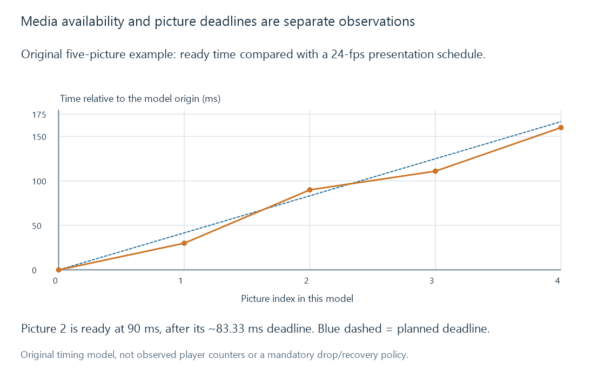

Dropped video frames during playback
Dropped playback frames are pictures not presented as intended, with counter origin and observation interval needed to distinguish client timing from source or conversion changes.
A dropped playback-frame observation concerns pictures not presented as intended. It can occur even while media continues to arrive and audio/playback time advances.
The first question is where the counter was measured. A player-side count is different from a conversion process's output-frame policy or a damaged source sequence.
Availability and presentation can disagree
A player may have enough received media while decoding, compositing or output scheduling cannot meet every picture's deadline. That differs from a stall caused by unavailable next media.

Late or discarded pictures can make motion uneven without proving the network buffer was empty. Conversely, network starvation can stop progress without a useful frame-drop counter explaining the cause.
Compare counters over a defined interval
Use original cumulative observations:
| Snapshot | Total video frames counted | Dropped frames counted |
|---|---|---|
| A | 1,000 | 10 |
| B | 2,000 | 50 |
The recent interval contains 1,000 counted frames and 40 drops, a ratio of 4%. The lifetime ratio at B is 50 / 2000 = 2.5%.
These ratios describe different observation intervals. A cumulative counter that stays nonzero after a problem disappears is not evidence that it is still increasing.
The example assumes the same counter epoch and scope. A reset, new source or new player object can invalidate a simple subtraction.
The counter's owner matters
The W3C Media Playback Quality draft defines player-oriented frame counters. A 2022 Emby app-developer explanation identifies the discussed dropped-frame information as coming from the player. Neither reference promises identical fields or instrumentation in every app.
A log's encoded-frame count is another observation. An encoder or cadence-conversion policy can intentionally omit or duplicate frames while producing a valid target sequence.
A picture skipped because the user sought elsewhere also differs from a picture missed during intended continuous presentation.
| Observation | Appropriate scope |
|---|---|
| Player frame drops | Player decoding/presentation path and its counter definition |
| Cadence conversion output | Requested frame-rate transformation |
| Missing/corrupt source data | Input validity and decoder evidence |
| Seek jump | Requested timeline change |
Relate the interval to the actual workload
Source parameters, client app/player, display/output path and competing activity can change presentation load. A “supported” codec configuration does not alone establish smooth output throughout the session.
See Also
- Playback stalls and unavailable next media
- Client playback capabilities
- Video Frame Rate
- Frame-Rate Conversion
- Reading Emby playback information